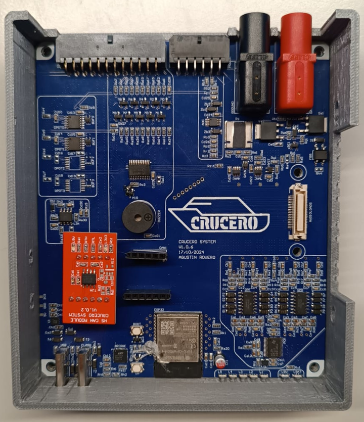
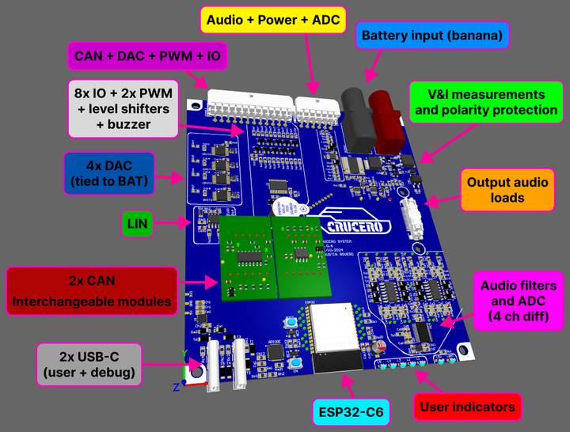
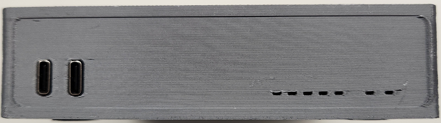
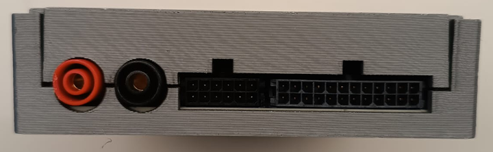
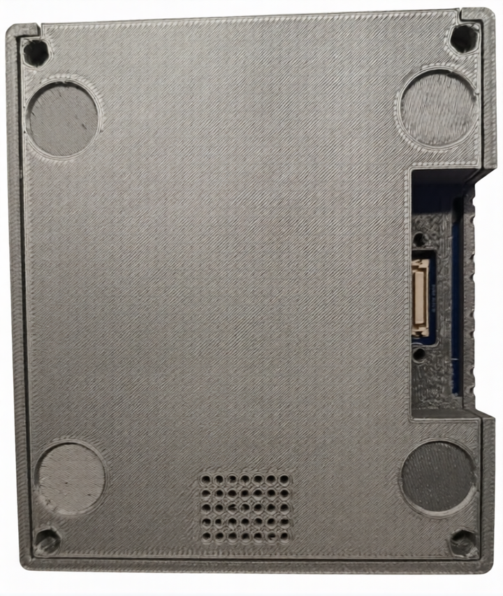

Crucero (Mirgor)
Project Overview
The Crucero System was an advanced, high-performance hardware and software validation platform designed to streamline automotive electronics testing. Inspired by the architectural successes of the Mirgor Monitoring System (MMS) and traditional CANoa tools used within the QA department (that used the Vector VN1600 family), the "Crucero" (Cruiser) was engineered as a significantly beefed-up, multi-protocol powerhouse. Over a 1.5-year end-to-end development cycle, I served as the sole engineer responsible for the full-stack creation of this system—encompassing advanced multi-layer PCB design, low-level embedded firmware, a reactive Python/PySide6 desktop application, and custom mechanical housing.
The Challenge
Modern automotive Quality Assurance demanded flexible test equipment capable of interacting with multiple communication protocols (CAN, LIN), simulating variable battery conditions, and analyzing multi-channel audio simultaneously. Existing commercial tools were often siloed, expensive, or lacked the modularity required for rapid test configuration. The goal was to build a consolidated, robust instrumentation platform that could serve as a "Swiss Army knife" for complex automotive validation.
My Impact & Key Contributions
1. Advanced Hardware Engineering & Instrumentation
I designed the entire system architecture from the ground up, utilizing CircuitMaker for ECAD and PCBWay for manufacturing.
- Core Compute: Integrated the cutting-edge ESP32-C6 microcontroller to handle high-speed processing and modern connectivity.
- Modular Communication Nodes: Designed and implemented two interchangeable custom CAN modules supporting both low-speed and high-speed CAN protocols, alongside an onboard LIN transceiver for complete automotive network coverage.
- Analog Signal Simulation & SWC Emulation: Engineered 4 Digital-to-Analog Converters (digital potentiometers paired with analog buffers) tied directly to the battery reference voltage to simulate analog Steering Wheel Controls (SWC) and other resistive peripheral networks required for active validation cycles.
- High-Fidelity Telemetry: Built a comprehensive monitoring array including local battery voltage/current sensing, remote kelvin-sensing battery measurement (VCC and GND terminals), and an 8-channel audio ADC configured as 4 differential inputs for advanced audio analysis.
- Isolated Power Architecture: Structured the board with dual USB-C interfaces (one for normal operation, one for debugging/power) ensuring the main high-current banana inputs were exclusively dedicated to powering the Device Under Test (DUT) through isolated measuring ICs.
- Expanded I/O & UI: Integrated an I/O expander driving 8 general IOs, a buzzer, and 5 user-addressable LEDs for real-time status indication and 2 PWM pins.
2. Embedded Operating System & Firmware Architecture
I developed the foundational firmware, transforming the ESP32-C6 into a reactive, message-driven embedded operating system.
- Robust Packet Encoding: Implemented Consistent Overhead Byte Stuffing (COBS) to guarantee reliable packet framing over UART.
- High-Efficiency Serialization: Developed a command processor that deserialized incoming user commands utilizing the MessagePack format, minimizing data overhead and execution latency.
3. Dynamic Host Software & Driver Architecture (Python / PySide6)
To control the platform, I architected a flexible, data-driven desktop ecosystem.
- Self-Describing Hardware: Engineered a Python driver that automatically queried the PCB upon connection, allowing the hardware to dynamically inform the software of its implemented functions and capabilities.
- Meta-Driven Command Parser: Wrote a custom command parser (similar to argparse) that dynamically loaded its configuration structure from a JSON file. This decoupling allowed engineers to modify the command syntax or structure entirely within JSON, leaving the core Python code completely untouched.
- User Interface: Developed a clean, responsive graphical user interface using PySide6 to give QA operators real-time control and telemetry visualization.
4. Mechanical Design
- Designed a custom, rugged enclosure tailored for laboratory environment demands, which was successfully prototyped and deployed via 3D printing.
Technical Stack
- Hardware Engineering: Multilayer PCB Design (CircuitMaker), Component Selection, Power Isolation, Modular Daughterboard Design, PCBWay Prototyping.
- Embedded Firmware: ESP32-C6 (C/C++, RTOS), Custom Command OS, COBS Encoding, MessagePack Serialization, ADC/DAC Interfacing.
- Software Engineering: Python, PySide6 (Qt), Metaprogramming (JSON-driven parsers), Serialization Protocols, Cross-Platform Desktop App Development.
- Protocols & I/O: High/Low-Speed CAN Bus, LIN Bus, I2C/I2S/SPI, UART, PWM, Differential Audio Sampling.
- Mechanical: 3D Polymeric Enclosure Design.
Gallery
{kind=link}

{kind=link}

{kind=link}

{kind=link}

{kind=link}
